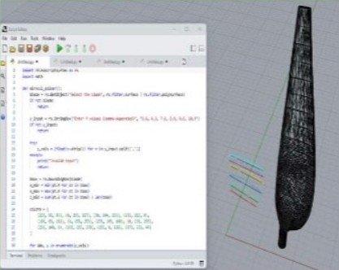

NASA Armstrong, 2026
X-59 QueSST structural analysis
Structural analysis and stress evaluations for NASA's quiet supersonic X-59, plus real-time flight test monitoring and Python tools for processing flight data.
- FEA
- Python
- PTC Creo
- Flight test
Mechanical Engineering, Fresno State
I'm Dana, a mechanical engineering student with an aerospace minor in Fresno State's Finish in Five BS/MS program. I've worked on structures, test, and rotorcraft through three NASA internships.

The Collegian wrote about my path from community college to NASA.
Read "Shooting for the Stars"About
I'm a mechanical engineering student at Fresno State in the Finish in Five program, working toward my BS with an aerospace minor (Fall 2027) and my MS (Fall 2028). I started at West Hills Community College, where I earned my AA, before transferring to the Lyles College of Engineering.
My favorite work is where analysis meets real hardware: running a thermal chamber test, watching flight data come in from the control room, or figuring out why a part behaves differently than the model said it would. I'm skilled in CAD, simulation, and experimental validation, and I like turning engineering concepts into designs that actually get built.
Experience
NASA Armstrong Flight Research Center, Aerostructures Branch
NASA Armstrong Flight Research Center, Quantum Sensing Technology
NASA Ames Research Center
Duncan Enterprises (iLoveToCreate), Fresno, CA
Projects
NASA Armstrong, 2026
Structural analysis and stress evaluations for NASA's quiet supersonic X-59, plus real-time flight test monitoring and Python tools for processing flight data.

NASA Armstrong, 2026
Thermal chamber and vibration testing of a quantum sensor prototype, plus TEC controller logic to hold laser temperature steady for the optics.

NASA Ames, 2025
A Python GUI tool that evaluates rotorcraft performance using interpolated CAMRAD II power coefficient tables.

NASA Ames, 2025
Automated extraction of airfoil cross sections from 3D rotor blade geometry to speed up aerodynamic analysis.

MATE ROV, 2025 to present
A six-thruster layout for full 6 DOF control and station keeping in flowing water, plus tether routing and strain relief to protect the electronics.

NASA Armstrong, 2026
Checked a 6061 aluminum gusset engine mount against design standards for a 600 lbf load, focusing on stress concentration at a web cutout.

Duncan Enterprises, 2023 to 2025
Packaging specs and drawings for new product lines, plus time studies that fed into production efficiency reports.
NASA project images shown are publicly released or general representations.
Skills
Leadership

Jun 2026 to May 2027
I lead seven chapter officers across programming, professional development, and K-14 outreach. I also direct our WE26 national conference sponsorship campaign, from corporate outreach to a tiered sponsorship packet, to fund student travel to Boston.
Former Secretary, Society of Hispanic Professional Engineers
Member, American Institute of Aeronautics and Astronautics
Mentoring first-year engineering students
ME 112 Dynamics, Fall 2026
Contact
I'm open to internships and full-time roles in structures, testing, propulsion, and hardware.
danapaolawork17@gmail.com